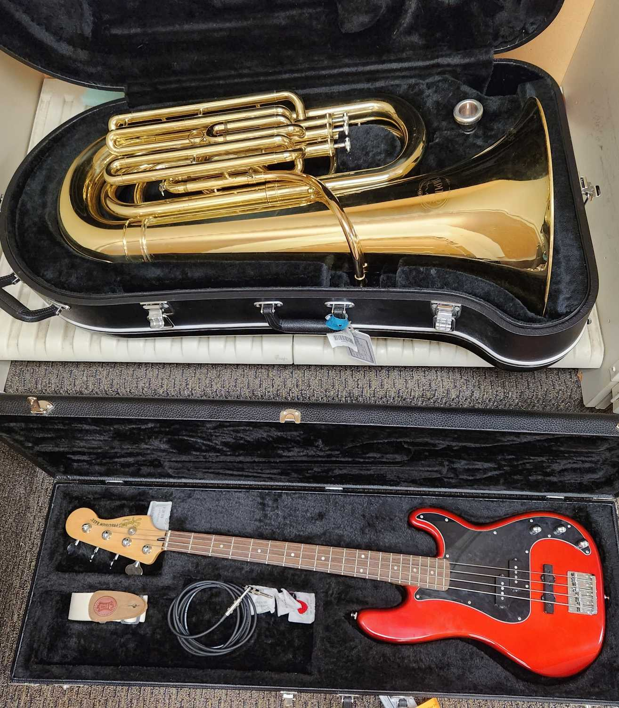
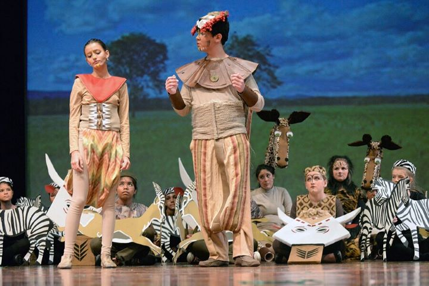
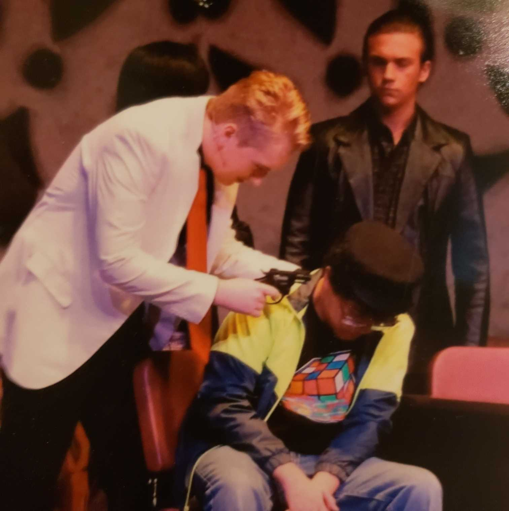

The first thing I wanna talk about is my rather long background in music. I
really love music, and I've been playing instruments and performing in ensembles since 5th grade! I
remember before then always looking forward to music class and getting to sing at songfests. I started
playing cello in 5th grade, which I unfortunetally can't get a picture of because it's back home. After that
I started playing the Tuba in 6th grade, which I continue to play today in the St. Thomas Symphonic Band!
In 9th grade I joined choir because that was when the school allowed kids to take all three. I also switched
to playing upright bass in 8th grade and later on in 10th grade I learned that electric bass is incredibly
similar, which I also still play today in the St. Thomas Guitar Ensemble.

I was also in the school Muscials from 8th grade until I graduated from Highschool,
which is 5 different musicals that I played a (often small) role in!
The first musical I was in was "The Lion King Jr." where I got
to play the role of Mufasa. It was so much fun but also a bit scary because at the time I wasn't in choir
and wasn't very confident in my singing voice.

The first musical I was in was "The Lion King Jr." where I got
to play the role of Mufasa. It was so much fun but also a bit scary because at the time I wasn't in choir
and wasn't very confident in my singing voice.
Thats me in the center!
The next musical I was in was "Sister Act" in ehich I had the role of chorus,
except for one scene where I was a taxi driver which is the scene that the image is from! For my second
year doing musicals it was still so fun even though I didnt have a very large role.
A fun scene where I
got threatened by a mob boss with a fake gun!
For the other 3 musicals, I couldn't get any pictures but I can still talk about them!
For my 10th grade year, I was in "Into the Woods". I was chorus again and if I had to choose a musical I
liked the least it would definitaly be this one because it wasn't made with a chorus so there wasn't much
we did. For 11th grade, I was in "Mamma Mia" where I was chorus and a small role where I was Father
Alexandrios. This one was lots of fun, Mamma Mia is a classic and has some great songs and fun choriography.
The final musical I was in was "Newsies", in which I played Pulitzer. It was super fun to be the bad guy
and was a lot interesting character to play.